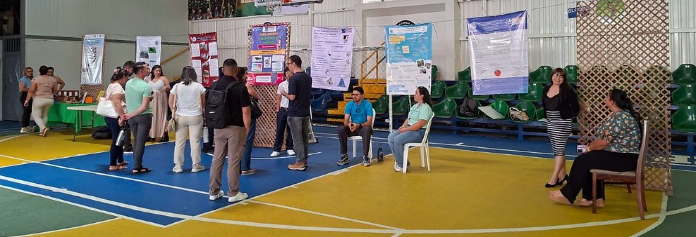

Conferences · Education
FIMAT CONCITES 2027 (International Mathematics Festival and National Congress on Science, Technology and Society)
- Dates
- –
- Venue
- Educación Continua (Educon) building, Universidad de Costa Rica
- Location
- San José, Costa Rica
- Format
- In-person
- Category
- Education
- Industry
- Education / STEM
- Organiser
- Fundación CIENTEC
- Official website
- https://cientec.or.cr/programas/educadores-divulgadores/fimat-concites-2027
About
Held since 1998; extra field trips the day after. Costa Rica dates are local (Costa Rica time, UTC-6 all year, no daylight saving).
Topics: mathematics education, science education, STEAM, ICT in education.
No organiser attendance figure found on the official pages checked (24 Nov 2026). Ranked by an estimated size tier 'small' (about under 1,000 attendees; our judgement from format, venue and scale, not an official number).
Sources
- Official — https://cientec.or.cr/programas/educadores-divulgadores/fimat-concites-2027